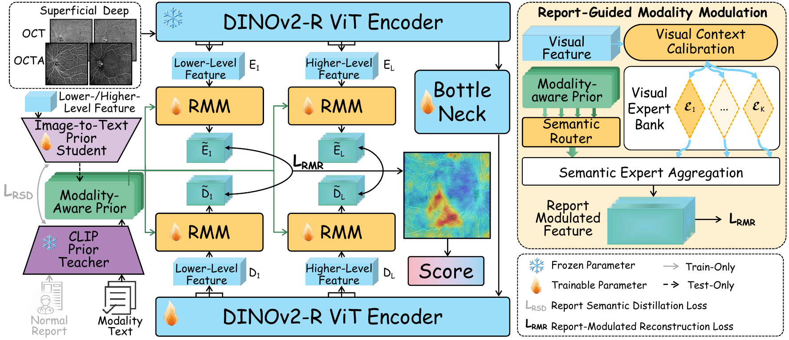
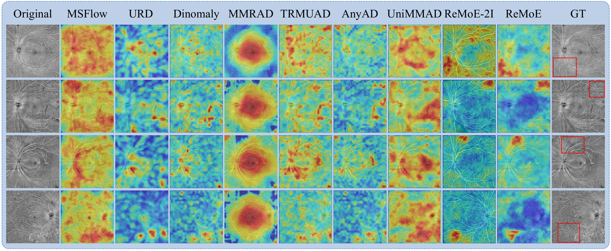

Multimodal medical anomaly detection identifies samples deviating from normal patterns, where scarce abnormal cases make normality modeling from normal data practical. In retinal Optical Coherence Tomography (OCT) and OCT Angiography (OCTA) anomaly detection, existing unsupervised methods rely on visual feature distributions, reconstruction residuals, or encoder-decoder discrepancies, making anomaly scores depend on appearance-level deviations, while multimodal normality also contains semantic organization described in normal medical reports.
To this end, we propose Report-Guided Mixture-of-Experts (ReMoE), which distills normal report semantics into an image-to-text prior student, builds modality-aware priors, and uses Report-Guided Modality Modulation (RMM) to modulate features through mixture-of-experts routing. Experiments on a private OCT/OCTA dataset with paired normal reports and the public OCTA500-3MM using pseudo-reports demonstrate state-of-the-art performance.

ReMoE uses a frozen DINOv2-R encoder with a trainable bottleneck and decoder. A lightweight image-to-text prior student learns from a frozen CLIP text teacher to predict report-related semantics directly from multimodal images. These pseudo-text representations are combined with modality anchors to form modality-aware priors.
RMM uses the priors to route visual experts and modulate paired encoder and decoder features before discrepancy computation. This transforms raw visual discrepancies into semantic-aware discrepancies, allowing the anomaly score to reflect departures from visual normality under report-guided modality conditions.
At inference time, ReMoE requires only the four retinal inputs—superficial and deep OCT and OCTA. The student predicts pseudo-text priors without requiring a clinical report for the test case.
| Category | Method | Inputs | Protocol | Private I-AUROC | Private I-AP | OCTA500 I-AUROC | OCTA500 I-AP |
|---|---|---|---|---|---|---|---|
| Visual only unimodal |
MSFlow | 1 | Avg. 4 inputs | 0.6532 ± 0.0067 | 0.7969 ± 0.0048 | 0.8432 ± 0.0074 | 0.8568 ± 0.0064 |
| URD | 1 | Avg. 4 inputs | 0.6773 ± 0.0049 | 0.8091 ± 0.0050 | 0.8344 ± 0.0079 | 0.8621 ± 0.0072 | |
| Dinomaly | 1 | Avg. 4 inputs | 0.7175 ± 0.0015 | 0.8511 ± 0.0010 | 0.8242 ± 0.0061 | 0.8302 ± 0.0097 | |
| RD4AD | 1 | Avg. 4 inputs | 0.6903 ± 0.0013 | 0.7746 ± 0.0129 | 0.8432 ± 0.0017 | 0.8478 ± 0.0034 | |
| PatchCore | 1 | Avg. 4 inputs | 0.6776 ± 0.0009 | 0.7324 ± 0.0010 | 0.6973 ± 0.0038 | 0.7367 ± 0.0043 | |
| SimpleNet | 1 | Avg. 4 inputs | 0.7258 ± 0.0053 | 0.8386 ± 0.0029 | 0.7901 ± 0.0042 | 0.8142 ± 0.0081 | |
| Visual only multimodal |
MMRAD | 2 | Avg. 2 pairs | 0.5705 ± 0.0358 | 0.7392 ± 0.0225 | 0.6549 ± 0.0482 | 0.7121 ± 0.0100 |
| TRMUAD | 2 | Avg. 2 pairs | 0.7016 ± 0.0027 | 0.8236 ± 0.0066 | 0.8653 ± 0.0057 | 0.8629 ± 0.0034 | |
| AnyAD | 4 | All 4 inputs | 0.7800 ± 0.0016 | 0.8925 ± 0.0013 | 0.8639 ± 0.0064 | 0.8924 ± 0.0018 | |
| UniMMAD | 4 | All 4 inputs | 0.7015 ± 0.0019 | 0.8330 ± 0.0015 | 0.7924 ± 0.0043 | 0.8536 ± 0.0092 | |
| Ours | ReMoE-2I | 2 | Avg. 2 pairs | 0.7994 ± 0.0041 | 0.8908 ± 0.0032 | 0.8822 ± 0.0272 | 0.8977 ± 0.0126 |
| ReMoE | 4 | All 4 inputs | 0.8682 ± 0.0033 | 0.9358 ± 0.0020 | 0.9166 ± 0.0219 | 0.9198 ± 0.0225 |
ReMoE achieves state-of-the-art performance in both settings. On the private dataset, it reaches an I-AUROC of 0.8682 and an I-AP of 0.9358, outperforming the strongest four-input visual-only baseline by 8.82 and 4.33 percentage points. On OCTA500-3MM, it improves I-AUROC and I-AP by 5.27 and 2.74 percentage points.

Qualitative anomaly maps on the private OCT/OCTA dataset. Red boxes indicate abnormal regions annotated by an ophthalmologist according to the corresponding clinical reports. ReMoE produces stronger, more spatially coherent responses near report-indicated regions while reducing background activation.
@inproceedings{nie2027remoe,
title = {ReMoE: Report-Guided Mixture-of-Experts for Multimodal OCT/OCTA Anomaly Detection},
author = {Zihan Nie and Qincheng Qiao and Muhao Xu and Wei Feng and Xinguo Hou and Weiye Song and Zongyuan Ge},
booktitle = {},
year = {2027}
}